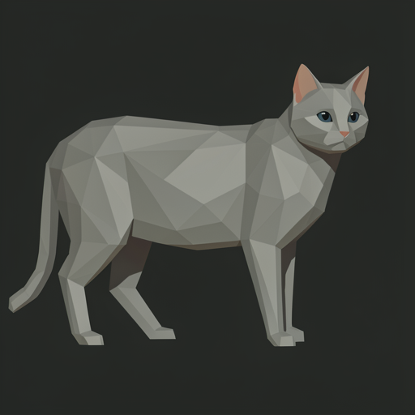
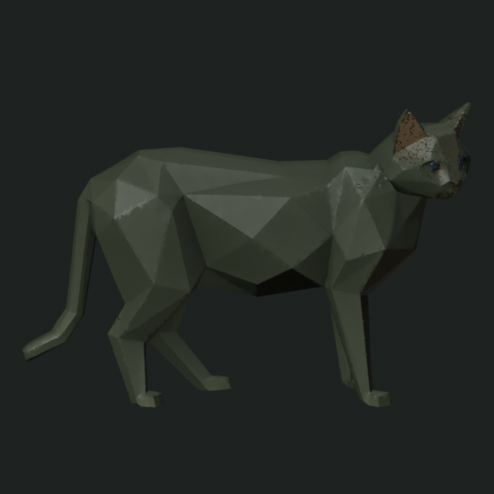

Does a matched second reconstruction stabilize the polygonal-cat round trip, sharpen it toward a feline basin, or accumulate learned-basin drift?
seed 80301 · flux2-klein-9b q4 · 512×512 · 8 steps · guidance 1.0Second-cycle reconstruction routes are matched to cycle 1. The Blender fit permits only translation, rotation, and one uniform scale. It cannot bend limbs, resize one axis independently, or locally deform either cast.


1057fcf61ecf4c610779a9eab6c52aa3550cdee529fca46306010a9b65f2b8e1 · 8,101,292 bytes · 139,651 rendered vertices
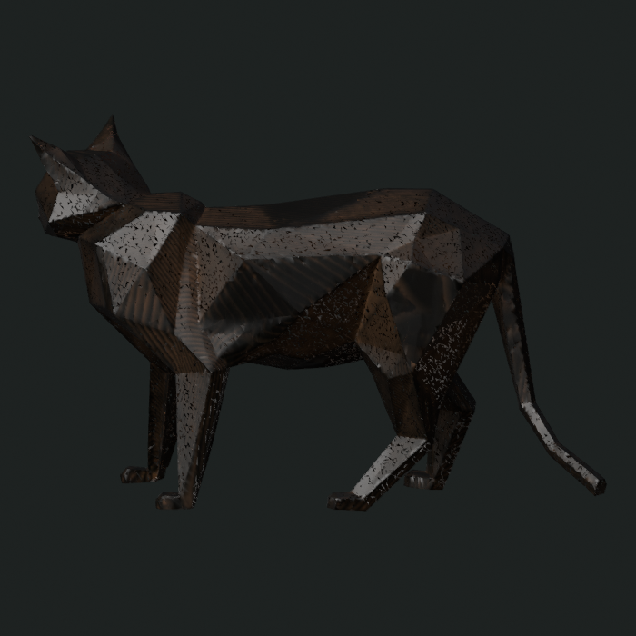
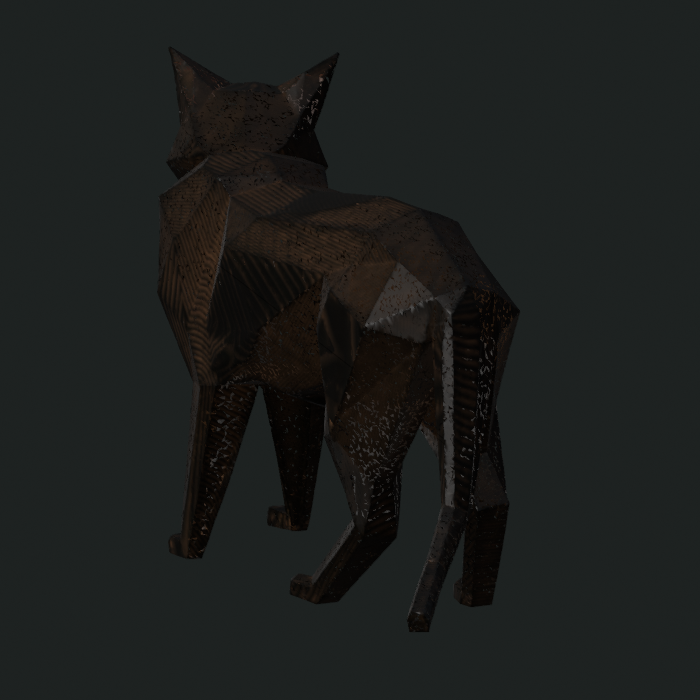

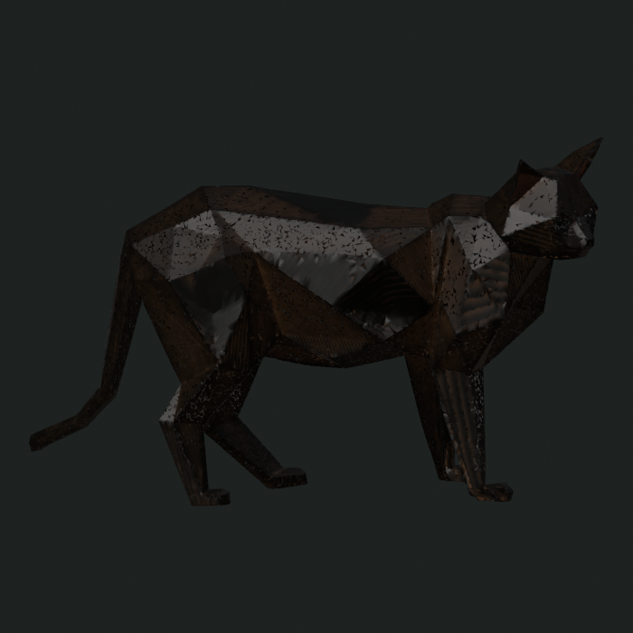

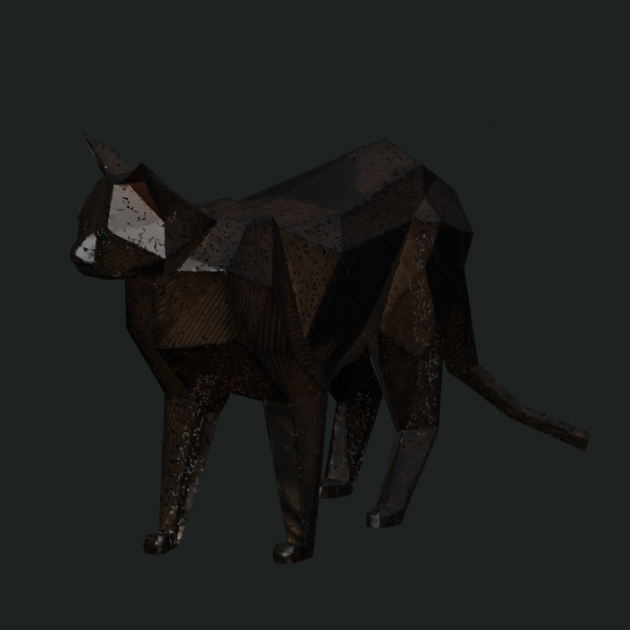
da9b82daf1990ecc9543e0841a30256e3284ea499e1693ebc13ae420fcd29cf9 · 701,028 bytes · 10,094 rendered vertices
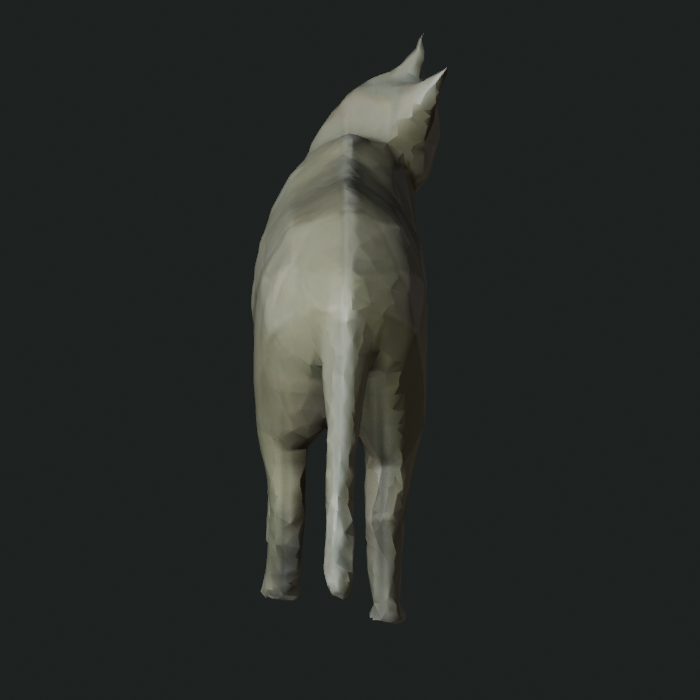
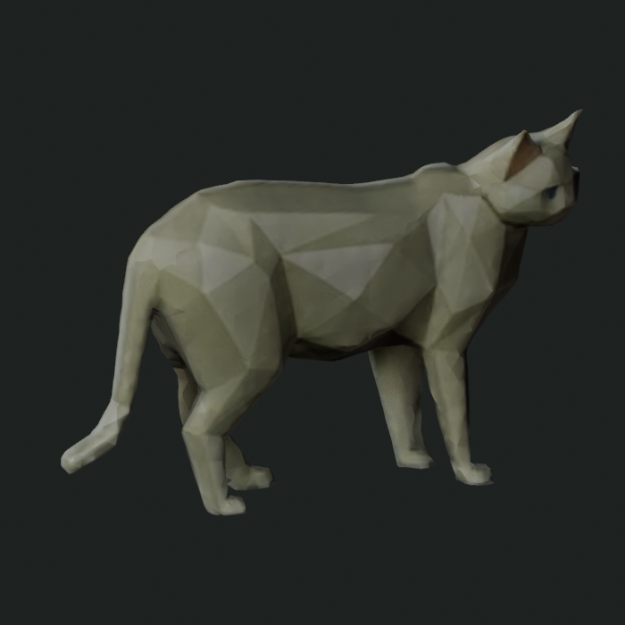
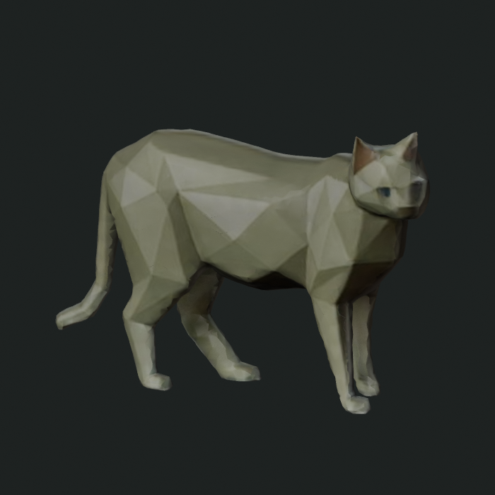
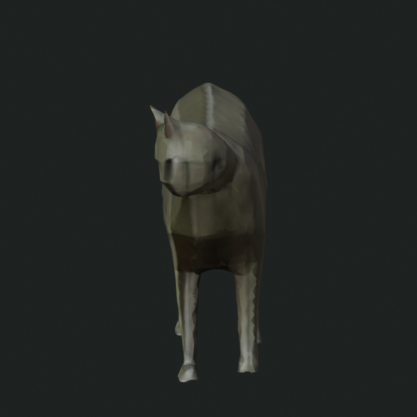
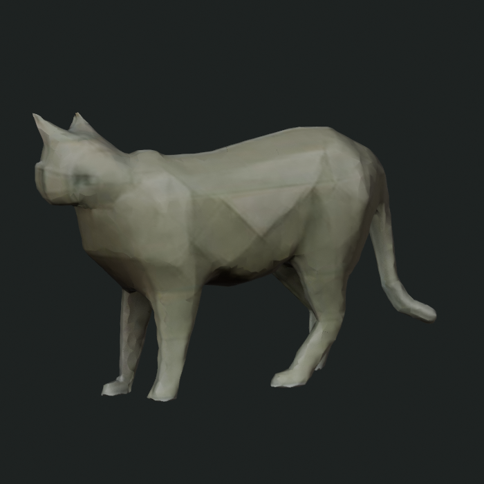
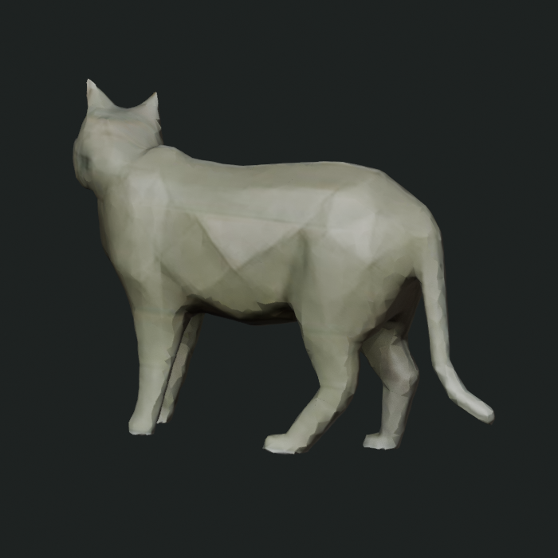
Cyan: cycle 1. Orange: cycle 2. Raw views retain each cast’s native scale and orientation, with translation only for side-by-side display. Registered views apply the one fitted global similarity transform to cycle 2.
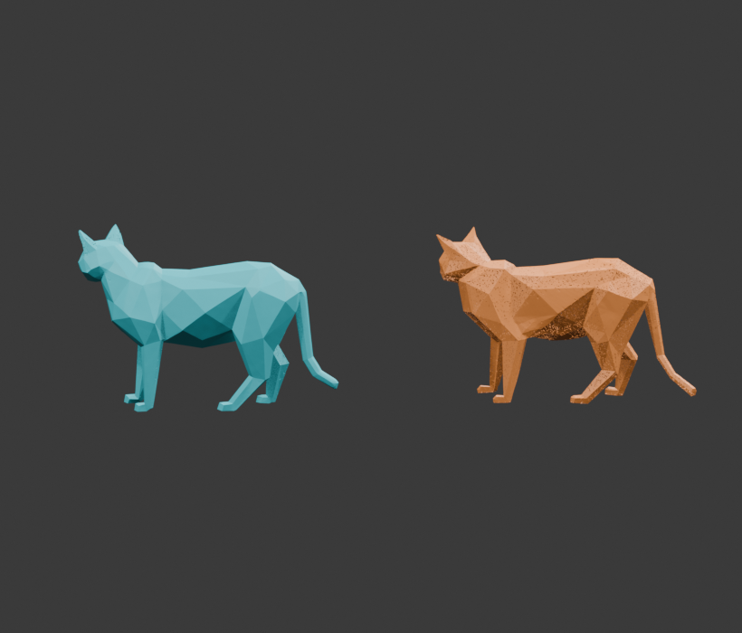
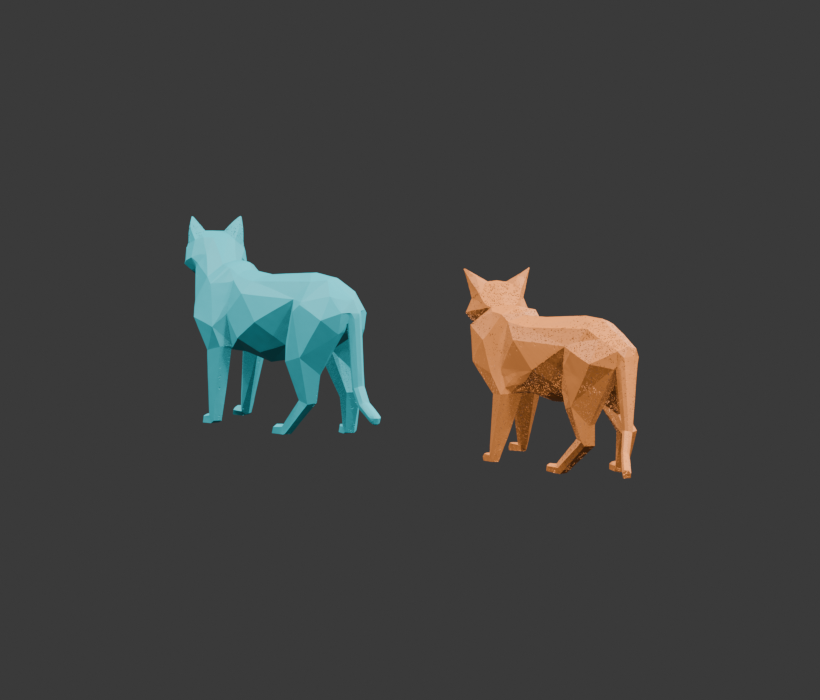
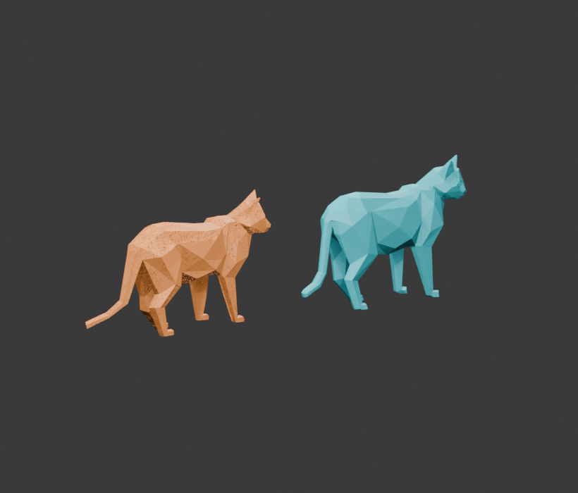
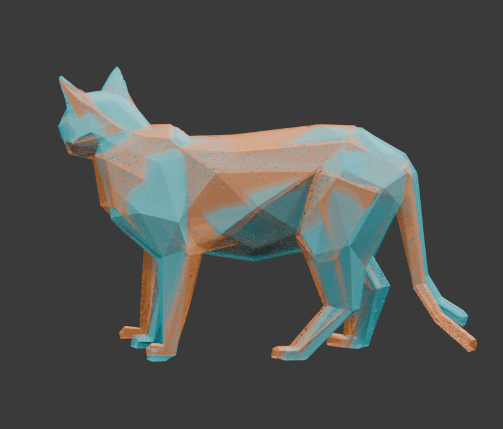
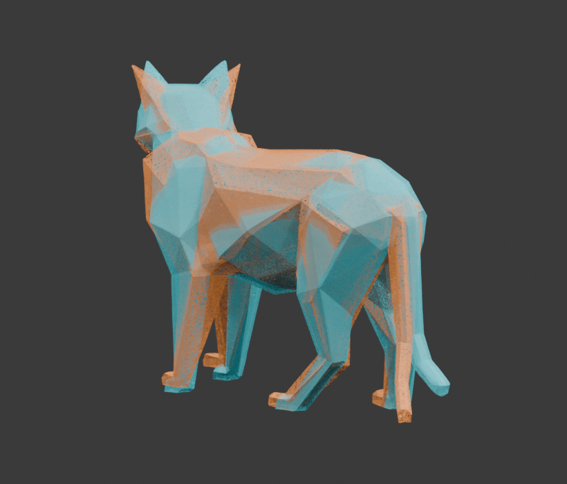
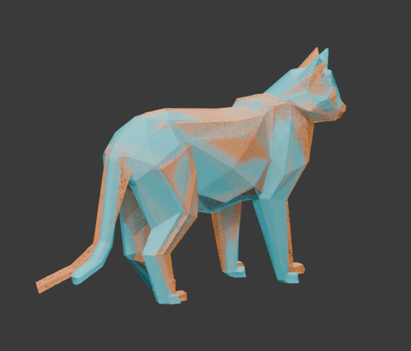
Exact second-FLUX source, matched effective reconstruction routes, complete orbit appearance, and diagnostic global-similarity registration only; no arbitrary-source convergence, anatomical fidelity, topology, or production claim.